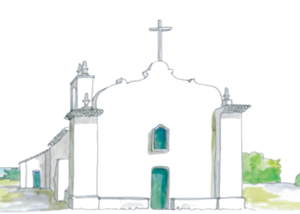

Bem-vindos!
Estamos muito felizes em compartilhar com vocês esse momento tão especial e esperado!
Neste site vocês encontrarão dicas sobre hospedagem, restaurantes e como aproveitar ao máximo esses
dias no paraíso.
Esperamos cada um de vocês para comemorarmos e curtirmos muito. Temos certeza que será um final de
semana maravilhoso e inesquecível para todos nós!
Nos vemos em Milagres!
Faltam
Programação

Como Chegar
Trancoso

Trancoso é um distrito de Porto Seguro, no Litoral Sul da Bahia.
O charmoso vilarejo conquista seus visitantes com praias deslumbrantes e uma vida noturna
animada, cheia de opções de bares e restaurantes.
O famoso Quadrado é o coração de Trancoso. O grande gramado, rodeado por casinhas coloridas, tem
um clima único. Por lá, você pode aproveitar a tranquilidade, fazer uma boa caminhada e
descobrir restaurantes variados, bares e lojinhas.
No final do Quadrado, fica a Igreja de São
João Batista – a famosa Igrejinha do Quadrado –, com uma vista incrível para o mar.
Pegar Táxi
Táxis disponíveis no Aeroporto de Porto Seguro para levar você diretamente ao destino.
Saiba maisReservar Transfer
Serviços de transfer confiáveis para uma viagem confortável e segura até Trancoso.
Saiba maisAlugar Carro
Opção ideal para explorar a região com flexibilidade e liberdade de horários.
Saiba maisHospedagem

Pousada Quarto Crescente
Localizada a 400m do Quadrado, o hotel tem bar no local, solário, salão de jogos e um parquinho infantil. Também conta com serviço de quarto, lavanderia e serviço de babá.

Clubmed Trancoso
Resort All Inclusive entre Trancoso e Arraial d'Ajuda, o Club Med recebe você em um cenário excepcional, no alto das falésias de uma praia paradisíaca. Protegido das principais rotas turísticas da Costa do Descobrimento, o Resort é um refúgio de paz, com bangalôs charmosos e atividades para adultos e crianças. Tênis e trapézio voador são duas das atividades familiares oferecidas, e os golfistas têm um campo espetacular por perto, que descortina uma bela vista para o mar.

Pousada Tangará
Tangará é um pequeno oásis de tranquilidade em Trancoso, Bahia. À beira mar, situada entre palmeiras, lagos e jardins. A 5 minutos do Quadrado, tem restaurante com vista para o lago e jardins, bar e lounge com frente para o mar.
Mais opções de hospedagem
-
Pousada Villas de Trancoso
São 10 villas e suítes de um e dois quartos elegantemente decoradas com móveis de madeiras, artesanato local e elementos rústicos, distribuídas em 11.000 metros quadrados de belos jardins paisagísticos e a poucos passos até a piscina, spa, restaurante e praia.
-
Pousada Cajueiro
Localizado em Trancoso, a 700 metros da Praça Quadrado, o Cajueiro Premium Trancoso dispõe de piscina ao ar livre e churrasqueira. A 150 m da Praia dos Nativos, a pousada tem estacionamento privativo gratuito e algumas unidades com cozinha.
-
Estrela D'Água
Localizada a 600 metros do Quadrilátero mais charmoso do planeta, integrante da tradicional Associação Roteiros de Charme. A Pousada oferece um ambiente totalmente acolhedor, integrado à natureza , respeitando rigorosas normas ambientais. Ideal para quem procura conforto e sofisticação.
-
Pousada Calypso
A 1 minuto a pé do Quadrado e a apenas 300 m da praia, a Pousada Calypso tem decoração rústica e banheira de hidromassagem no jardim. Todos os quartos têm ar-condicionado, ventilador e Wi-Fi gratuito, além de TV, frigobar, cofre e varanda.
-
Pousada Jequitibá
A 50 m do Quadrado, esta pousada encantadora oferece quartos com Wi-Fi gratuito. Todos os quartos da Pousada Jequitibá são bem iluminados e possuem ar-condicionado, além de uma rede. O banheiro moderno tem chuveiro e pia em granito.
-
Pousada Campestre
A apenas 100 m do Quadrado, a propriedade oferece estacionamento privativo gratuito. Os quartos são bem iluminados e arejados, e contam com ar-condicionado. Equipados com piso de azulejo, apresentam Wi-Fi gratuito, uma TV, frigobar e banheiro privativo com chuveiro quente.
-
Pousada do Bosque
A 100 m do Quadrado e a 500 m do mar, a Pousada do Bosque oferece acomodações em estilo rústico, além de jardim e piscina. Decoradas com artesanato regional, todas as suítes têm varanda com rede. Todas as unidades contam com ar-condicionado, TV, frigobar e cofre. Servido em um terraço amplo e arejado, o café da manhã inclui frutas da estação, sucos e produtos caseiros.
-
Hotel Boutique Bahia Bonita
Perto do Quadrado, o hotel possui suítes encantadoras, piscina com hidromassagem, bar e restaurante. Tem serviço de transfer gratuito para praia privativa do Bahia Bonita, a Praia do Rio Verde.